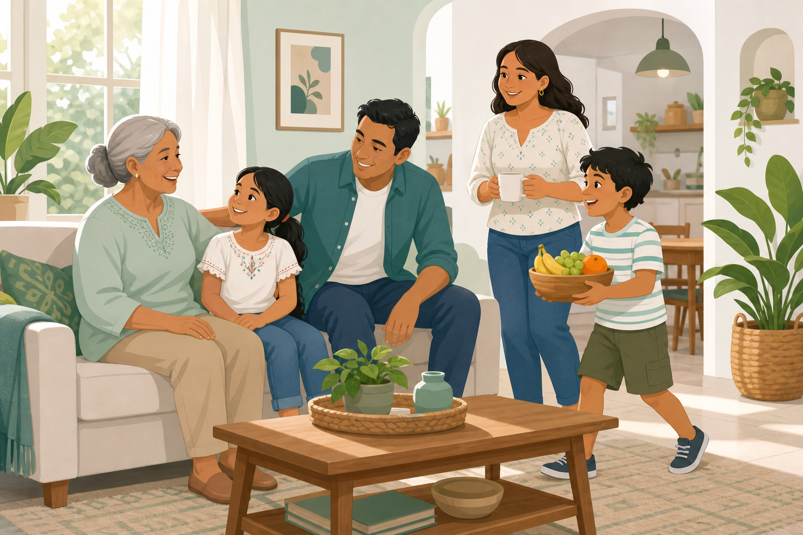

Consultorio médico · Medicina familiar y comunitaria · La Mesa, Cundinamarca
Atención cercana para toda su familia
Acompañamiento en salud con enfoque integral, preventivo y respetuoso.
Soy médica especialista en medicina familiar y comunitaria: formación de posgrado pensada para acompañarlo a usted y a su familia con tiempo de escucha, prevención y seguimiento. Consultorio en La Mesa, Cundinamarca.
Sobre mí
Hospital universitario de alta complejidad, vinculado a la Universitat de Barcelona y reconocido por su labor asistencial e investigadora. De forma sostenida aparece en clasificaciones internacionales que comparan centros de todo el mundo.
Centro de atención primaria del Eixample, gestionado por el consorcio CAPSBE en el ámbito de Barcelona Esquerra, en coordinación con la red asistencial del Hospital Clínic. Atiende a la población adscrita desde el edificio de consultas externas (Rosselló, 161) y participa en proyectos de salud comunitaria y continuidad entre niveles de atención.
Practico la medicina familiar de forma integral: reúno en una sola mirada su entorno, su familia, su bienestar emocional y la coordinación entre distintas condiciones, para que el cuidado refleje a la persona, no solo los síntomas.
En España quien ejerce medicina familiar suele ordenar el cuidado a lo largo de la vida; mi propósito es acercar ese enfoque a Colombia, empezando en La Mesa, Cundinamarca, con rigor y cercanía. Valoro la comunicación honesta, la educación en salud y el seguimiento para prevenir complicaciones y mejorar su bienestar cotidiano.
Formación académica y certificaciones Pulse para ver la lista
¿Qué es la medicina familiar y por qué la necesita?
Sin importar su edad o el tipo de problema de salud, la medicina familiar es la especialidad que lo acompaña de forma completa a usted y a su familia: desde el bienestar y la prevención hasta el manejo de enfermedades crónicas y muchas situaciones agudas que pueden resolverse en consulta.
A diferencia de un enfoque centrado en un solo órgano o un solo diagnóstico, la médica o el médico familiar mira a la persona entera y su contexto: familia, trabajo, hábitos y entorno. En ese mismo marco puede orientar, por ejemplo, a un niño con un cuadro respiratorio leve, a un adulto sobre alimentación o estrés y el seguimiento de un adulto mayor con diabetes o hipertensión.
Lo que la distingue
- Cuidado integral: integra lo físico, lo emocional y lo social; le acompaña en las distintas etapas de la vida.
- Relación en el tiempo: con citas de seguimiento, quien lo atiende conoce mejor su historia y sus prioridades; eso favorece el diagnóstico, el tratamiento y la prevención.
- Prevención: controles, esquema de vacunación según las guías, hábitos y educación en salud, no solo el remedio cuando ya hay enfermedad.
- Coordinación: articula su cuidado con otros especialistas y con la red cuando hace falta, para un manejo ordenado.

Por qué le conviene
- Continuidad e integración: menos piezas sueltas entre informes, especialistas y su día a día.
- Mirada holística: síntomas y dolencias se entienden mejor junto con su vida cotidiana y su entorno.
- Primer contacto: acceso ordenado al sistema; muchas situaciones se resuelven en consulta sin recurrir de inmediato a urgencias.
- Prevención y cronicidad: ayuda a detectar a tiempo y a mantener bajo control condiciones como diabetes, presión o problemas cardiometabólicos.
- Respeto por su contexto: la conversación y el plan tienen en cuenta su cultura, su familia y su realidad en Colombia, incluida la forma en que usa el sistema de salud.
No sustituye la urgencia ni todas las especialidades; las complementa con continuidad y criterio clínico.
Medicina familiar en Colombia: lectura breve si la especialidad le es nueva.
Mis servicios
Opciones de cuidado para usted y su familia.
-
Consulta de medicina familiar
Valoración integral, tiempo de escucha y plan de cuidado conjunto; derivación cuando haga falta.
-
Seguimiento de enfermedades crónicas
Controles periódicos y metas claras (por ejemplo presión, diabetes o colesterol).
-
Medicina preventiva
Chequeos, vacunas según su caso, hábitos y detección temprana.
-
Situaciones urgentes y agudas
Orientación cuando más la necesita; no sustituye la urgencia hospitalaria si hace falta.
-
Todas las edades
Niños, adultos y adultos mayores, con continuidad y trato respetuoso.
-
Atención domiciliaria
Visitas programadas si no puede acudir al consultorio.
-
Idiomas de atención
Español, inglés y francés.
Preguntas frecuentes
¿Qué es la medicina familiar y en qué se diferencia del médico general o de la «medicina general»?
La medicina familiar y comunitaria organiza el cuidado en el tiempo: integra su historia, síntomas que a veces parecen no relacionados, prevención y enfermedades crónicas en un mismo hilo, y define cuándo el consultorio alcanza y cuándo hace falta otra especialidad o un servicio de urgencias.
En el habla cotidiana, «médico general» o «medicina general» suele significar que uno busca esa primera atención amplia y cercana. Quien ejerce medicina familiar atiende a menudo esa misma necesidad. El añadido está en el método y en la formación de posgrado (continuidad, contexto familiar, derivación ordenada), no en desmentir la palabra con la que usted llegó a esta página.
¿En qué temas de salud tiene especial interés la Dra. Angélica?
En la consulta prioriza el cuidado de personas con patología compleja (varias condiciones o medicaciones que conviene leer juntas), el adulto mayor y la prevención y el seguimiento de la diabetes y del riesgo cardiometabólico, con metas claras y tiempo para resolver dudas.
También acompaña cuando el cuadro es difícil de ordenar: síntomas prolongados, historias o exámenes dispersos, o condiciones poco frecuentes. Ahí el enfoque es una mirada global, la anticipación de complicaciones y una definición clara de los pasos siguientes, incluida la derivación cuando hace falta otro nivel especializado.
¿Por qué acudir a una especialista en medicina familiar si ya tiene médico de cabecera, EPS u otro tratante?
En muchos esquemas con EPS el tiempo por consulta es acotado; no es extraño que ronde los diez o quince minutos. Con eso a veces alcanza para un episodio puntual, pero suele faltar margen para explorar con calma, cruzar varios síntomas a la vez (presión, sueño, medicación, dolor), o armar una lectura global que incluya prevención y contexto familiar.
La medicina familiar y comunitaria se forma para ese tipo de conversación: un posgrado con rotaciones supervisadas por distintas áreas clínicas. El objetivo no es igualar a cada especialista en su propio terreno, sino desarrollar una mirada que integre lo que en otros niveles suele verse en fragmentos, con criterio clínico propio y con claridad para derivar cuando el caso lo exige.
Su médico de cabecera y su EPS siguen siendo, según su plan, donde se gestionan póliza, autorizaciones y urgencias. La consulta en este consultorio es particular y puede sumarse cuando en La Mesa busque más tiempo, profundidad o seguimiento.
¿El consultorio atiende por EPS o es atención particular?
Es atención particular: cita y honorarios se acuerdan directamente con el consultorio. Autorizaciones, remisiones obligatorias y urgencias que su aseguradora maneje por regla siguen su curso habitual con la EPS u otro pagador.
¿Qué pasa si se necesita un especialista?
Cuando el caso lo exige, la Dra. Angélica deriva con criterio hacia colegas de confianza en La Mesa o en Bogotá. La red incluye, entre otras áreas, neurología, pediatría, dermatología, psiquiatría, traumatología, oftalmología y más, de modo que el paso entre niveles sea ordenado y pueda mantenerse seguimiento desde el consultorio cuando corresponde.
¿Atienden todas las edades?
Sí. Una misma mirada familiar puede acompañar a niños, adultos y adultos mayores cuando el caso permite manejo en consultorio externo, y derivar con claridad cuando hace falta otra especialidad o hospitalización.
¿En qué idiomas puede atenderse la consulta?
La atención es en español, francés e inglés, con dominio fluido en los tres. La Dra. Angélica creció en Colombia, estudió en el Lycée Français de Bogotá y en su hogar se habla inglés, lo que suele facilitar la consulta para familias multilingües o quienes prefieren explicarse en otro idioma.
¿Dónde queda el consultorio y cómo agendar?
En el Centro Comercial Andaki - Consultorio 7, La Mesa (Cundinamarca); el mapa y la dirección están más arriba en esta página. Lo más ágil suele ser WhatsApp al 310 770 0625 o el formulario de contacto.
Contacto
Coordine su visita por WhatsApp o mediante el formulario. Si puede, indique el motivo de consulta de forma breve.
Consultorio
Calle 8 # 24-12
Centro Comercial Andaki - Consultorio 7
La Mesa, Cundinamarca, Colombia
Modalidad de la consulta
El consultorio atiende en modalidad particular: usted coordina cita y valoración directamente aquí por WhatsApp o correo.
Esto no sustituye el circuito que su EPS u otro asegurador determine para autorizaciones, remisiones obligatorias ni servicios de urgencias. Puede convivir con su médico de cabecera o tratante cuando el plan lo exija, como explicamos en las preguntas frecuentes.